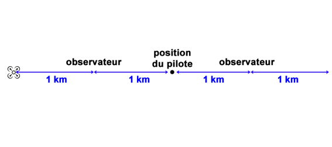

Définitions
- L'énoncé qui décrit le mieux 'visibilité directe (VLOS)' est
Contact visuel maintenu sans aide, qui est suffisant pour en garder le contrôle, suffisant pour assurer la détection et l'évitement d'autres aéronefs ou objets. - L'abréviation «BVLOS» signifie...
Beyond visual line of sight. - L'acronyme «NOTAM» signifie
Message aux navigants (NOtice To Air Men). - Le sigle CAM signifie :
Circulation Aérienne Militaire. - Le sigle MTOM signifie :
Masse maximale au décollage. - Parmi les abréviations suivantes, celle qui désigne un espace aérien contrôlé est :
CTR - zones de contrôle : CTR (ConTRol zone) - régions de contrôle : CTA (Control Traffic area) - Voie aérienne : AWY (Airway). - Région de contrôle terminale : TMA (Terminal Area) - Centre d'Information de Vol : CIV - Contrôle du trafic aérien : ATC (Air Traffic Control). - Région d'information de vol : FIR (Flight Information Région)
- CAG :
Circulation Aérienne Générale - Le Service de l'Information Aéronautique (SIA) est :
Chargé de rendre les services d'information aéronautique nécessaires à la sécurité, à la régularité et à l'efficacité de la navigation aérienne. - Une publication contenant des renseignements relatifs à la sécurité des vols, la navigation aérienne, des questions techniques, administratives ou législatives est :
Une circulaire d'information aéronautique (AIC).
Catégories
Spécifique
- Il est possible d'opérer sous certaines conditions un UAS en vol de nuit en catégorie «spécifique». La réglementation défini la «nuit» comme
Les heures comprises entre la fin du crépuscule civil et le début de l'aube civile. - Il n'est pas de la responsabilité de l'exploitant en scénario spécifique de s'assurer qu'avant le début de l'exploitation, toutes les personnes présentes dans la zone contrôlée au sol :
Connaissent parfaitement les procédures de l'exploitant d'UAS. L'exploitant d'UAS en STS-01 et STS-02 s'assure qu'avant le début de l'exploitation, toutes les personnes présentes dans la zone contrôlée au sol: a) ont été informées des risques liés à l'exploitation; b) ont reçu des informations ou une formation, selon le cas, sur les mesures et précautions de sécurité établies par l'exploitant d'UAS pour leur protection; et c) ont expressément accepté de participer à l'exploitation; - Les exploitants d'UAS s'enregistrent lorsqu'ils exploitent, dans le cadre de la catégorie 'Spécifique', un aéronef sans équipage à bord...
De n'importe quelle masse. - Un exploitant doit détenir une autorisation d'exploitation pour :
Les vols en catégorie «spécifique».
- Afin de répondre à une demande d'exploitation par UAS, on vous demande de transporter des liquides phytosanitaires. Cette opération est réalisable :
Avec un UAS certifié et l'exploitation relève de la catégorie certifiée.
Spécifique
- Vous voulez faire voler votre drone en STS-1 au-dessus d'une zone avec un faible relief, à une hauteur supérieure à 120 m. Pour cela :
Vous pouvez le faire en scénario spécifique sous certaines conditions. - Pour exploiter un UAS en catégorie «spécifique» :
L'exploitant doit faire une déclaration d'exploitation auprès de l'Autorité compétente. - Pour l'exploitation d'un UAS en catégorie «spécifique», l'aéronef doit être équipé :
D'un système d'identification à distance actif et à jour.
- Il est possible de faire évoluer un UAS à une hauteur supérieure à 120m :
Dans le cadre du PDRA-G01. - Les PDRA concernent des UAS d'énergie cinétique :
Inférieure à 34 kJ.
Classes UAS
- Combien existe-t-il de classes d'aéronefs sans équipage à bord ?
7 C0 à C6
- La masse maximale pour un aéronef sans équipage à bord de classe C0 dans la catégorie OUVERTE est de :
250 gr.
- Un UAS de classe C5 et/ou C6 doit satisfaire aux exigences techniques relatives :
à la fonction de géovigilance de classe C3. - Un UAS de classe C5, non captif :
Ne peut pas être un aéronef à voilure fixe. particularité de la classe C5, le drone ne peut pas être un avion/planeur/aile volante, sauf s'il est captif
- La vitesse sol maximale d'un UAS de classe C6 en palier est de :
50 m/s (180 km/h).
Un drone à voilure fixe peut être utilisé en scénario STS-01 en étant captif.
Un drone à voilure fixe peut être utilisé en scénario STS-02 sans être captif.
- Votre drone n'est pas marqué C5 ou C6, pouvez-vous l'exploiter ?
Oui, dans le cadre d'un PDRA. - Votre drone n'est ni de classe C5, ni de classe C6. Le vol en zone peuplée (agglomération) :
Impose de voler sous PDRA-S01.
Scénarios Européens
- Quelle affirmation est juste pour un vol en STS-01 :
L'UAS doit rester en vue directe de son pilote. - Vous voulez faire voler votre drone en STS-1 au-dessus d'une zone avec un faible relief, à une hauteur supérieure à 120 m. Pour cela :
Vous pouvez le faire en scénario spécifique sous certaines conditions. - Le PDRA-S01 est basé sur le scénario standard STS-01 mais permet l'utilisation de drone :
Qui n'appartiennent pas à la classe C5. pareil sts-01 avec possibilité d'utiliser des UAS n'étant pas catégorisé en C5 - Dans le cadre de l'exploitation d'un drone en STS-02, est-il possible d'avoir plusieurs observateurs de l'espace aérien ?
Oui - En STS-02, il n'est pas de la responsabilité d'un observateur de l'espace aérien
De s'assurer que l'UAS est homologué pour l'exploitation en cours. - Je dois faire évoluer mon UAS à une distance de 4 KM de ma position. Je peux le faire :
Sous un certificat allégé d'exploitation (LUC) seulement.
- Pour toute opération ne se conformant pas aux scénarios standards européens en catégorie Spécifique, un exploitant doit demander une autorisation d'exploitation en s'appuyant sur la fourniture d'une étude de sécurité réalisée selon la méthode :
SORA. specific operation risk assessement - Les PDRA concernent des UAS ayant une envergure, ou un diamètre de rotor ou une distance entre les rotors :
Inférieure à 3m. - Il est possible d'exploiter un drone en scénario STS-02 seulement si la visibilité en vol minimale est :
Supérieure à 5 km. - En STS-02, lorsqu'il n'est pas en vue directe (VLOS) du pilote à distance, et sans l'assistance d'observateur de l'espace aérien, un drone doit :
évoluer à moins d'1 km du pilote et suivre une trajectoire préprogrammée. - Dans le cadre de l'exploitation d'un drone en STS-02, la distance maximale entre observateurs de l'espace aérien se limite à :
2 km.

Zones
- Une zone géographique UAS peut être interdite aux aéronefs sans équipage à bord :
Pour des raisons de sécurité, de sûreté, de respect de la vie privée ou de protection de l'environnement. - Les volumes particuliers (R, D, P) sont consultables sur des NOTAM, AIP, cartes et compléments aéronautiques qui permettent également de connaître :
Les limites verticales et horizontales. - Les espaces aériens contrôlés sont les espaces :
A, B, C, D et E. - Pour trouver des informations à jour sur les zones Dangereuses (D), Interdites (P) et Règlementées (R) vous utilisez :
Le site de l'AIP du pays survolé.
- les annotations ZRT et ZIT de cet extrait d'AIP concernent des zones :
Temporaires, à pénétration restreinte (ZRT) et interdite (ZIT). - Les zones de l'espace aérien dites 'à statut particulier' sont :
Les zones dangereuses, les zones interdites, les zones réglementées et les zones de ségrégation temporaire. - L'identification de chaque zones interdite, réglementée et dangereuse est composée :
Des lettres de nationalité des indicateurs d'emplacement assignés à l'État ou au territoire, suivi des lettres P, R et D et d'un numéro. - Le Service de l'Information Aéronautique (SIA) établit et diffuse :
1 - les publications aéronautiques françaises (AIP)
2 - les informations à caractère urgent ou temporaire (NOTAM et SUPpléments à l'AIP)
3 - les circulaires d'information aéronautique (AIC)
un,dos,tres - Où peut-on trouver les informations sur un espace aérien restreint ?
Dans l'AIP.
Europe
- Concernant les conditions d'exploitation des UAS en catégorie «spécifique» :
Chaque État membre peut imposer des règles d'exploitation plus restrictives que les règles de l'État où est enregistré l'exploitant. - Vous êtes titulaire d'une autorisation d'exploitation en catégorie Spécifique, afin d'effectuer un vol transfrontalier, il sera nécessaire de soumettre à l'État membre autre que celui d'immatriculation, le(s) lieu(x) de l'exploitation envisagée, y compris les mesures d'atténuation mises à jour, qui sont
Spécifiques à l'espace aérien, au terrain, aux caractéristiques de la population et aux conditions climatiques dudit ou desdits lieux. - Vous êtes titulaire d'une autorisation d'exploitation en catégorie Spécifique. Les évolutions de votre drone vont l'amener lors d'une mission à survoler partiellement l'espace aérien d'un État membre autre que celui où est immatriculé votre aéronef (vols transfrontaliers). Pour cela :
Vous devrez obtenir une confirmation d'autorisation de l'état survolé. - La réglementation européenne pour opérer des UAS ne concerne pas...
Les opérations en intérieur. - Pour obtenir un autorisation de vols transfrontaliers de la part d'un État membre autre que celui où est enregistré votre drone, vous transmettez une demande avec les informations suivantes :
Une copie de votre autorisation d'exploitation et le détail du vol ou des vols envisagés, avec les mesures d'atténuations mises à jour pour faire face aux risques recensés. - L'espace aérien au-dessus des territoires obéit à des règles précises. Les règles de navigation (règle de l'air, règles applicables aux services de navigation aérienne) qui s'y appliquent sont du ressort de la :
Souveraineté d'un État. - Pour voler de nuit, il faut que l'Etat Membre où va se dérouler l'exploitation l'autorise et...
Que votre aéronef soit équipé de feux.
- En matière de circulation aérienne, le temps de référence est :
Le temps universel coordonné (UTC).
Droit et sanctions
- La conservation par l'exploitant d'informations concernant un incident technique encouru pendant l'exploitation, est :
D'au moins 3 ans. - La formation pratique du CATS est :
Renouvelable tous les 5 ans. - Le but des autorisations délivrées par les organismes de contrôle de la circulation aérienne est...
D'empêcher les abordages entre aéronefs contrôlés, d'accélérer et de réguler le trafic. - Une publication édité par ou avec l'autorité d'un État et contenant des informations aéronautique de caractère durable, essentiels à la navigation aérienne', cette définition correspond à
Une publication d'information aéronautique (AIP). - Un pilote à distance, à moins d'avoir l'autorisation des services d'intervention d'urgence responsables, ne vole pas :
à proximité ou à l'intérieur de zones où des mesures d'intervention d'urgence sont en cours. - Le droit à la vie privée est un droit fondamental en Europe...
Il s'applique à chacun et en toutes circonstances. - Parmi la liste suivante, les lieux considérés comme des «lieux publics» sont : 1 - une maison 2 - une gare de chemin de fer 3 - un lieu touristique 4 - un aéroport
2 - 3 - 4.
- La déclaration opérationnelle d'exploitation, soumise à l'État membre d'enregistrement, permet à un exploitant :
D'indiquer qu'il se conforme à un scénario standard. - L'exploitant d'UAS en catégorie «spécifique » :
établit des procédures et des limites adaptées au type d'exploitation envisagée et au risque couru. - La pénétration d'une zone réglementée, sans l'accord du gestionnaire de la zone, constitue :
Une infraction. - Votre attestation de réussite à la formation pratique pour voler sous STS-01 ou STS 02 :
A une durée illimité.